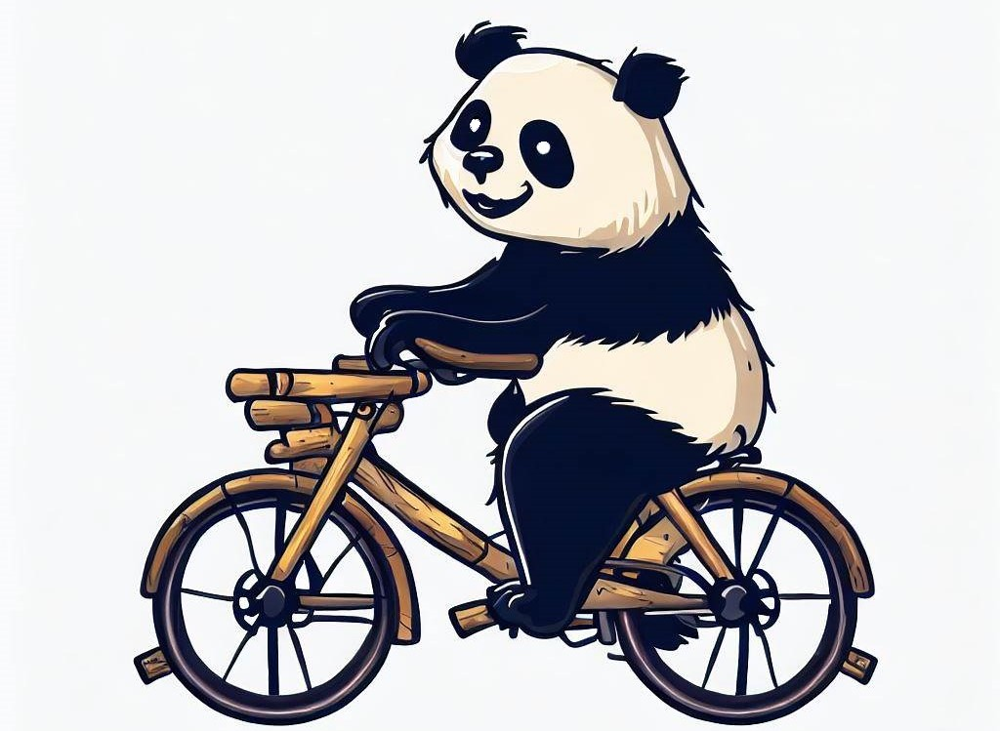
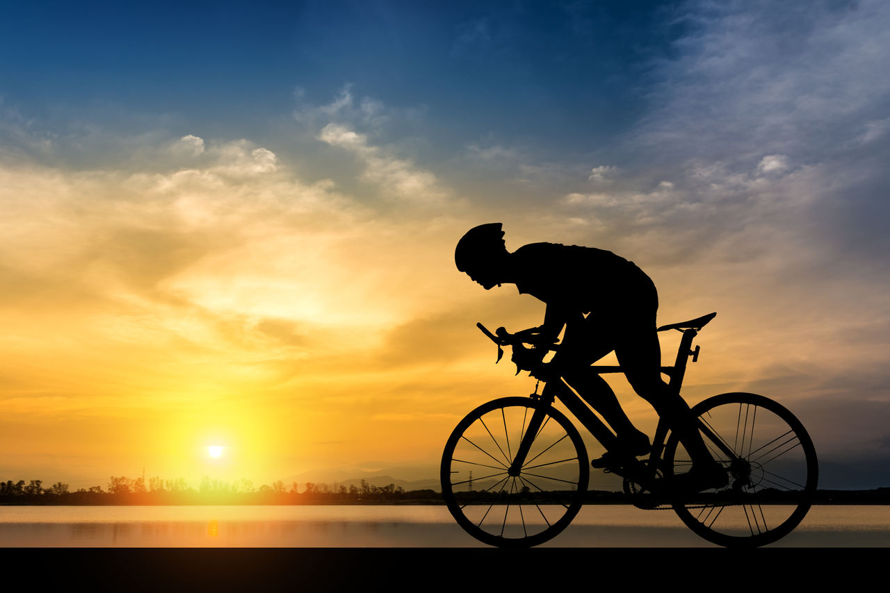

Resistência
O bambu é utilizado há milênios nas construções em diversos países . A planta, apesar de parecer frágil, é extremamente flexível e, quando passa pelos processos corretos de cura, pode equipar bikes que aguentam até 120 quilos. O bambu é mais forte do que a fibra de carbono e mais leve do que o alumínio.
Disponibilidade
O bambu é um material com ótima disponibilidade, pois existem variedades da planta em todos os continentes. Além disso, o vegetal é extremamente renovável, continua crescendo depois de ser colhido sem a necessidade de ser replantado. Algumas espécies podem crescer até 88 centímetros em 24 horas.


Ganhos ambientais
ma plantação de bambu pode ser mais eficiente do que outras para o meio ambiente, pois produz 35% mais oxigênio do que outras árvores e absorve altas taxas de dióxido de carbono (CO2). Além disso, as plantas de bambu combatem a erosão do solo e são importantes aliadas contra o desmatamento, ajudando na recuperação de solos gastos.
Ótima experiência de pedalada
A bicicleta de bambu proporciona uma ótima experiência, pois as fibras absorvem mais impacto, oferecendo um pedalar mais suave. As bikes feitas do material já foram testadas em laboratório e apresentam menos probabilidade de quebrar do que as feitas de fibra de carbono.
Bike de bambu da Parity Cycles em Chicago (Estados Unidos). (Fonte: Wikimedia Commons/Reprodução)
